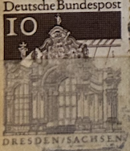
| SOURCE | TITLE| IMAGE MATCH | click to source page |
| ucoin.net | 10 euro 2005 - Burgtheater, Austria | 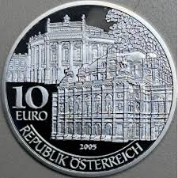 |
| Leftover Currency | 10000 Italian LIre banknote (Castagno) - Exchange yours for cash today | 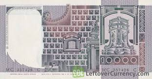 |
| RNS.lv | Germany, 2 Euro 2016, Sachsen A | 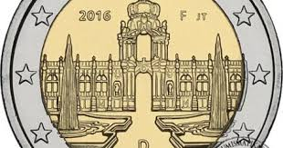 |
| eBay | GERMANY, NEUES BUNDESLAND BRANDENBURG 1990 UNC Bimetallic Token With COA YY1.4 | eBay | 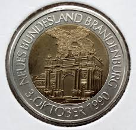 |
| one.bid | Germany - DDR (1949-1990), 5 M 1985 A - Dresden - Zwinger KM 103 "R" - Online auction / Online bidding - Price - OneBid | 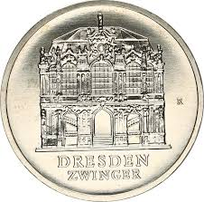 |
| Oesterreichische Nationalbank (OeNB) | Geschäftsbericht 2023 | 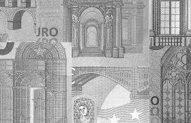 |
| eBay | Commemorative coin - East Germany GDR - 5 Mark 1985 A - Zwinger of Dresden - UNC | eBay Australia | 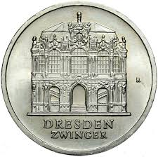 |
| World Bank | Untitled | 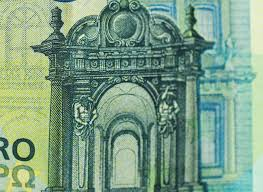 |
| Etsy | 0 Euro Note Königstein Fortress XEAV 2024-3 - Etsy | 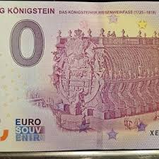 |
| Numista | World Heritage - Brussels - Belgium – Numista | 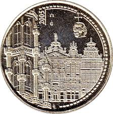 |
| Etsy | Flora Gdr - Etsy | 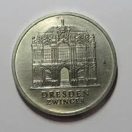 |
| allnumis.com | Rubens house - Antwerp, Tourism - Belgium - Token - 16640 | 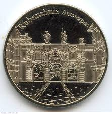 |
| coinscatalog.NET | Spanish Silver 2000 Pesetas "Presidency of the council of the European Union" 1995 KM# 954 | coinscatalog.NET | 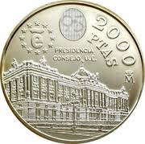 |
| Spanish 1000 Pesetas Banknote from 1925 | 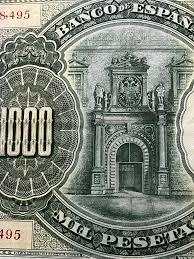 | |
| Shutterstock | Close-up Ukrainian 5-hryvnia Coin Paper Money Stock Photo 2693444959 | Shutterstock | 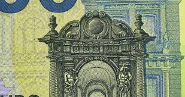 |
| Euromince | eurocoin eurocoins 10 Euro Austria 2005 Burgtheater (UNC) | 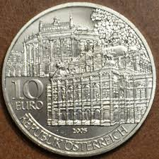 |
| Staatliche Museen zu Berlin | In Praise of Good Rule: The Lacquerwork of Gérard Dagly in the Berlin Palace | 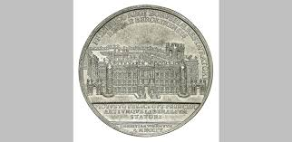 |
| Oesterreichische Nationalbank (OeNB) | Annual Report 2023 | 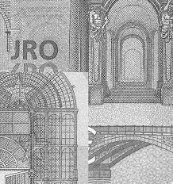 |
| allnumis.com | 40 Pfennig 1955 - Zwinger Castle, Dresden, 1955 - German Democratic Republic - Stamp - 37103 | 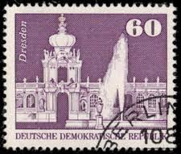 |
| ColeMone | 2000 Pesetas 1994 (Spain): Here's its value | 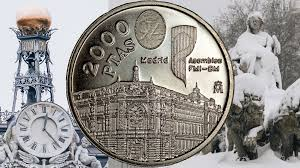 |
| eBay | Null Euro Schein - 0 Euro - Österreich - Benediktinerstift Admont 2024-9 | eBay | 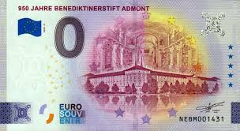 |
| eBay | 0 EURO Ticket Grevin Museum Paris France 2025 Number 6666 | eBay | 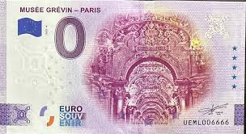 |
| Dreamstime.com | Map of Europe on a Banknote of 100 Euros Close-up. Old Retro Vintage Style Photo Stock Photo - Image of commerce, currency: 164123322 | 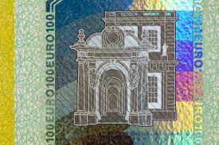 |
| YouTube | 100 EURO *OLD* 2002.REVIEW - YouTube | 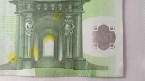 |
| Numista | Belgian Heritage Collectors Coin - Antwerpen (Rubenshuis) - Belgium – Numista | 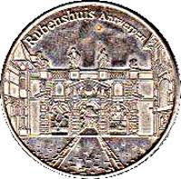 |
| Shutterstock | Details One Hundred Euro European Banknote Stock Photo 2304185821 | Shutterstock | 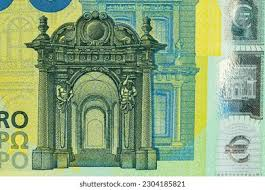 |
| MA-Shops | Munten en Bankbiljetten bij MA-Shops kopen | 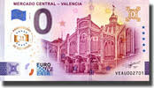 |
| wallapop.com | Billete 1000 Pesetas Banco de España de segunda mano por 15 EUR en Galdakao en WALLAPOP | 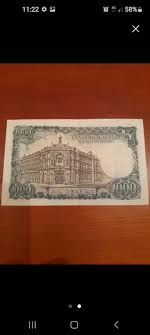 |
| RealBanknotes.com | RealBanknotes.com > Italy p106b: 10000 Lire from 1980 | 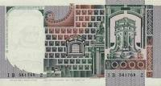 |
| eBay | Ticket 0 Euro Museum of The Navy Toulon France 2018 Number Suite 1234 | eBay | 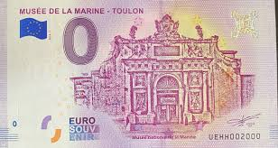 |
| Todocolección | alemania oriental (1948-1990) - 10 marcos 1976 - Buy Coins of Europe on todocoleccion | 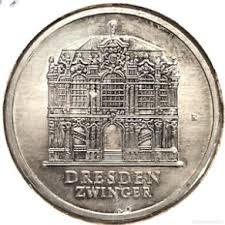 |
| eBay | greateasterndeals | eBay Stores | 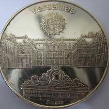 |
| Shutterstock | Close-up One Hundred Euro Banknote European Stock Footage Video (100% Royalty-free) 1103459805 | Shutterstock | 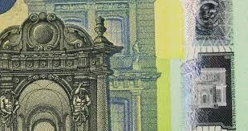 |
| Shutterstock | Details One Hundred Euro European Banknote Stock Photo 2321659875 | Shutterstock | 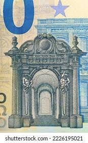 |
| eBay | Italy 10000 Lire, 1976 / 1976, P 106a, AU | eBay | 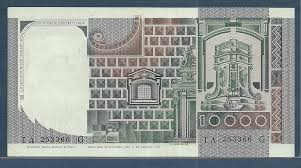 |
| allnumis.com | 10,000 Lire 1980 (6. IX.), 1976-1984 Issue - 10000 Lire - Italy - Banknote - 4799 | 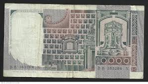 |
| Dreamstime.com | 2,672 Euro Banknotes Close Up 100 Stock Photos - Free & Royalty-Free Stock Photos from Dreamstime | 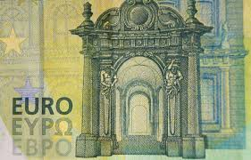 |
| eBay | Scotland 1939-1941, 1 Pound, P91b, PMG 58 AUNC | eBay | 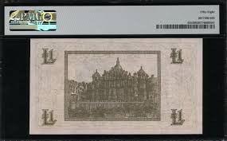 |
| Thomson Roddick | BANK OF SCOTLAND one pound £1 banknote 6th August 1931, Elphinstone and Scott, G0781838, F, SC | 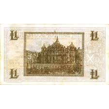 |
| Dreamstime.com | European Banknote of Ten Euro and South Korean Banknote of 1000 Won, Background and Texture Stock Image - Image of 1000, europe: 133430175 | 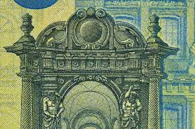 |
| eBay | BRD, 1965 Bauten 454 ** 6er Block Eckrand mit DZ 4, 10, (32160) | eBay | 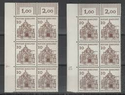 |
| Numista | 0 Euro - Košice (Dóm svätej Alžbety) - Slovakia – Numista | 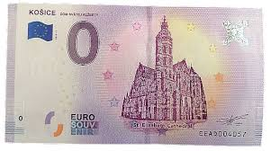 |
| Foreign Currency and Coin Exchange | Scotland 1 Pound (1935-1963 Bank of Scotland) - Foreign Currency | 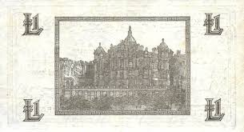 |
| MA-Shops | ITALIA/ITALIE. 50 LIRE. 24.01.1942.. Serie: C 763. SGE. | MA-Shops | 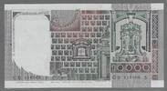 |
| Dreamstime.com | 219 Hologram Euro 100 Stock Photos - Free & Royalty-Free Stock Photos from Dreamstime | 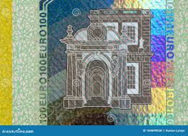 |
| Dreamstime.com | Euro Bills Background Different European Money for Wallpaper Stock Photo - Image of finance, account: 195116828 | 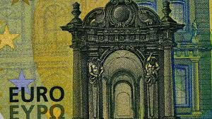 |
| Rahapesu Andmebüroo | In the seven months of the Ukraine war, financial sanctions have been applied in Estonia in 763 cases | Financial Intelligence Unit | 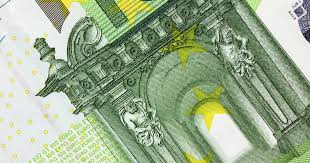 |
| iStock | Alter 5 Dmark Schein Stock Photo - Download Image Now - Bank - Financial Building, Brandenburg Gate, Capital Cities - iStock | 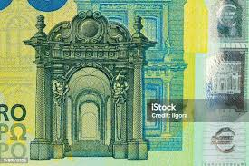 |
| AbeBooks | Ackermann's Oxford A King Penguin Book 69 by Colvin, H M ( notes ): Near Fine Hardcover (1954) 1st Edition | Deightons | 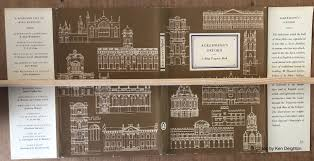 |
| Dreamstime.com | Closeup of 50 Euro Banknote, Design of New 50 Euro Bills. European Money Fifty Euros. European Monetary Union Stock Photo - Image of debt, background: 218795458 | |
| eBay | BANCA d'ITALIA 3. 11. 1982 10,000 LIRE (PICK#106b.2) CH XF/AU | eBay | |
| iStock | 3,400+ Euro Notes Macro Stock Photos, Pictures & Royalty-Free Images - iStock | |
| ucoin.net | 2000 pesetas 1994 - Asamblea Madrid, Spain | |
| one.bid | Danzig. 1923 1 Million Marek - Online auction / Online bidding - Price - OneBid | |
| Freepik | Details of the 100 euro banknote in green | Premium Photo | |
| BANK NOTE MUSEUM | P-91 | |
| Flickr | monedas | Flickr | |
| eBay | Spain 2000 pesetas 1995 “EU Presidency” UNC Silver (KM # 954) | eBay | |
| Shutterstock | Banknote Ukraine 1 Hryvnia Fragment Design Stock Illustration 2592119489 | Shutterstock |